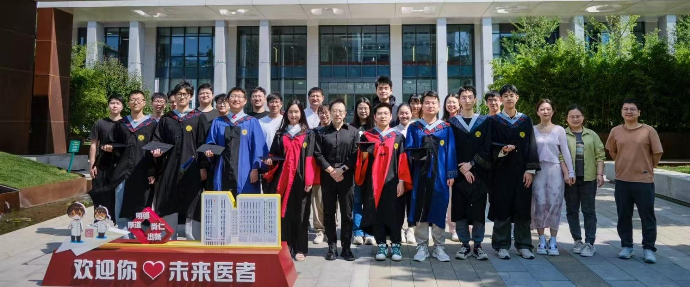
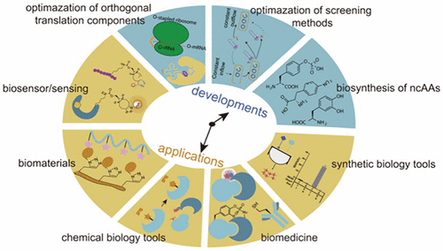
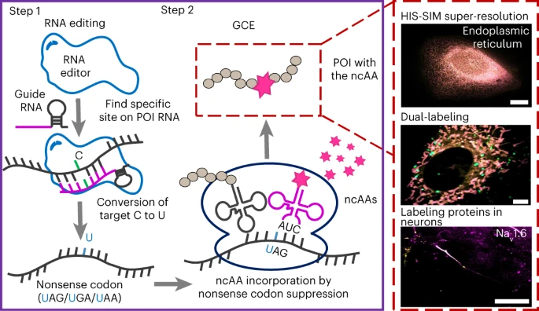

Top
Home
About Liu
Research
Publications
News
Members
Photos

Liu Group
Principles of Genetic Code Expansion
Applications of Genetic Code Expansion
Antibody-related Applications of Genetic Code Expansion
❮
❯
Welcome to Liu Lab !
Recent publications after 2022
More...
Zeng, Z.
#
, Cai, W.
#
, ... , Wang, Y.* Liu, T.*(2025). Small Molecule Drugs Triggered the Activation of Macrocycle Masked Proteins
Nano. Lett.
Huang, Y.
#
, Zhang, P.
#
, Wang, H.
#
, ... , Liu, T.* Luo, X.*(2024). Genetic Code Expansion: Recent Developments and Emerging Applications
Chem. Rev.

Hu, L.
#
, Cao, W.
#
, ... , Lou, X.* Liu, T.* (2024). Designing Artificial Fluorescent Proteins and Biosensors by Genetically Encoding Molecular Rotor-based Amino Acids
Nat. Chem.
Li, Y.
#
,Su, Y.
#
, ... , Liu, T.* (2024). Computation-Guided Discovery of Diazole Monosubstituted Tetrazines as Optimal Bioorthogonal Tools.
J. Am. Chem. Soc.
Hao, M.
#
,Ling, X.
#
, Sun, Y.
#
,... , Liu, T.* (2024). Tracking endogenous proteins based on RNA editing-mediated genetic code expansion.
Nat. Chem. Biol.

Cao, W.
#
, Wang, H.
#
, Quan, M.
#
, ... , Jiang, W. & Liu, T.* (2023). Reversible control of tetrazine bioorthogonal reactivity by naphthotube-mediated host-guest recognition.
Chem.
Wang, Y.
#
, Zhang, J.
#
, Han, B.
#
, ... , Yang, X.* & Liu, T.* (2023). Noncanonical amino acids as doubly bio-orthogonal handles for one-pot preparation of protein multiconjugates.
Nature Communications.
Wu, D.
#
, Zhang, Y.
#
, Tang Z.
#
, Chen X.
#
, ... , Liu X.*, Luo X.* & Liu, T.* (2022). Creation of a Yeast Strain with Co-Translationally Acylated Nucleosomes.
Angew. Chem. Int. Ed.
Ling, X. & Liu, T.* (2022). Innovative CRISPR Screening Promotes Drug Target Identification.
ACS Central Science.